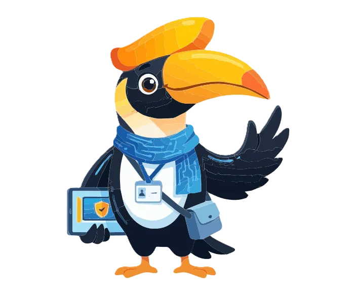

വീഡിയോ 1വീഡിയോ ഉടൻ വരുന്നുനിങ്ങളുടെ സുരക്ഷാ വഴികാട്ടി
റേയെ പരിചയപ്പെടാം
ഓരോ ഡിജിസേഫ് പാഠത്തിലും കൂടെയുള്ള ശാന്തനും സൗഹൃദമുള്ളതുമായ വഴികാട്ടിയാണ് റേ. എന്തൊക്കെ ശ്രദ്ധിക്കണം, എന്ത് ചെയ്യണം, എപ്പോൾ സഹായം ചോദിക്കണം എന്ന് റേ കാണിച്ചുതരും.
എന്തൊക്കെ പഠിക്കാം
- റേ ആരാണെന്നും ഓരോ പാഠത്തിലും റേ എങ്ങനെ വഴികാട്ടുന്നു എന്നും
- മുന്നറിയിപ്പ് സൂചനകൾ നേരത്തേ തിരിച്ചറിയുന്നത് എങ്ങനെ
- അക്കൗണ്ടും ഫോണും സംരക്ഷിക്കാനുള്ള ലളിതമായ ഘട്ടങ്ങൾ
ആർക്കൊക്കെ: 10–19 വയസ്സുള്ള വിദ്യാർത്ഥികൾ